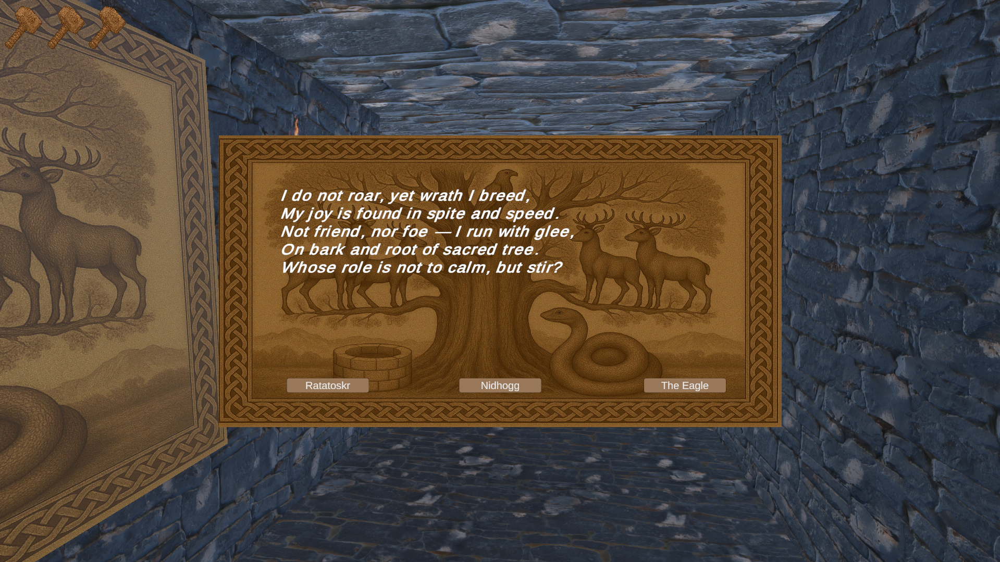
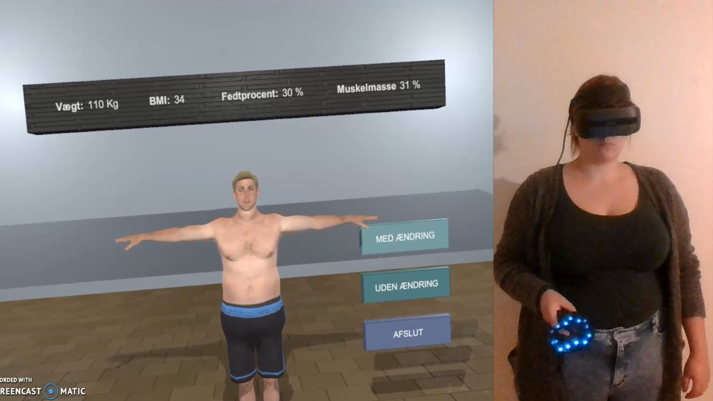
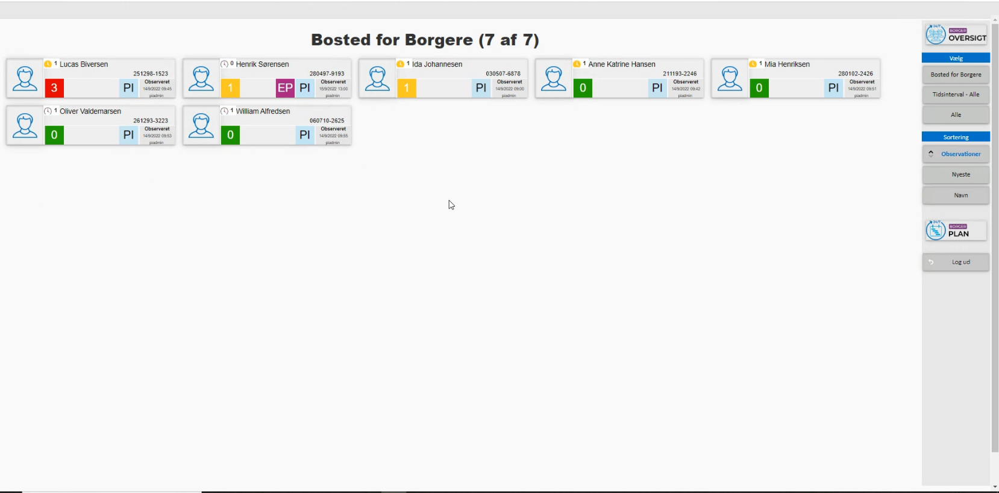
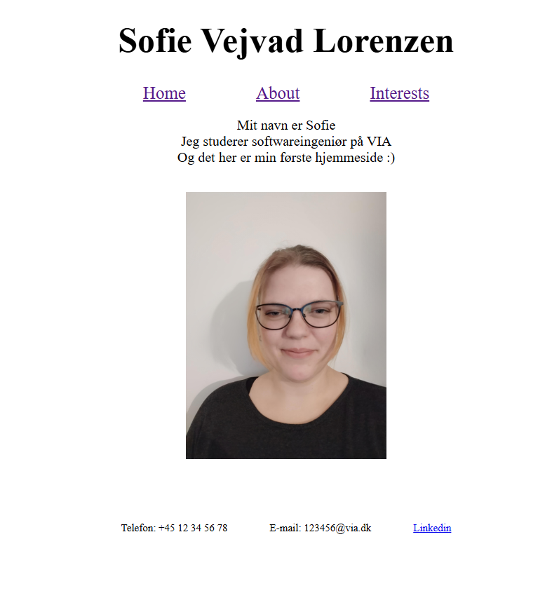
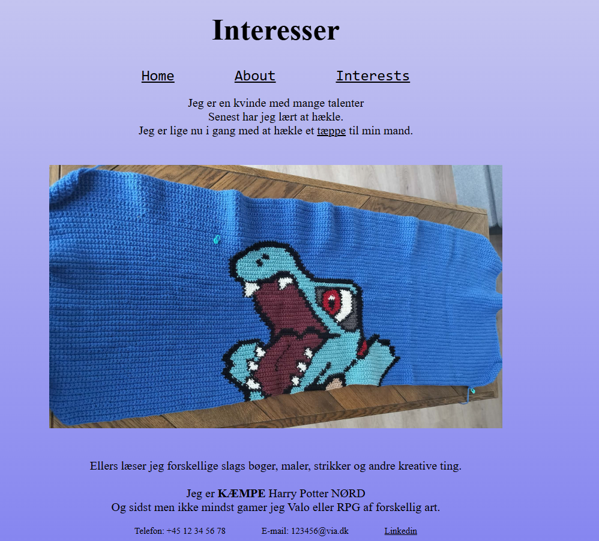

Portfolio
Between hel and hall

Selvudviklet narrativt labyrintspil med fokus på nordisk mytologi. Udviklet i Unity og C# med arbejde inden for koncept- og spildesign, UI, interaktiv lyd, gådelogik og test. Gennemført hele udviklingsprocessen fra idé til færdigt og udgivet spil.
Bachelor projekt
Udvikling af et VR-baseret motivationsværktøj i C# i samarbejde med sundhedspersonale. Fokus på brugertest, implementering og tilpasning til klinisk praksis, herunder identificering af tekniske og brugerrelaterede udfordringer på tværs af forskellige faggrupper.

Brugerplatform for Pallas

Jeg stod for et større redesign af Pallas’ brugerplatform med fokus på at skabe en brugervenlig og intuitiv brugergrænseflade ved hjælp af blandt andet HTML og CSS.
Min første hjemmeside
Udviklet en personlig hjemmeside i HTML og CSS med fokus på et overskueligt, brugervenligt og responsivt design. Hjemmesiden består af flere sammenhængende sider med fælles navigation og struktureret indhold. I udviklingen har jeg arbejdet med blandt andet semantisk HTML, CSS-styling, Flexbox, tabeller og responsivt design for at tilpasse hjemmesiden til forskellige skærmstørrelser.

Min Anden hjemmeside

Videreudviklet den personlige hjemmeside med CSS med fokus på et mere personligt og ensartet design. Arbejdede med farver, skrifttyper, spacing, borders og tabeller samt custom properties til genbrug af farver på tværs af hjemmesiden.